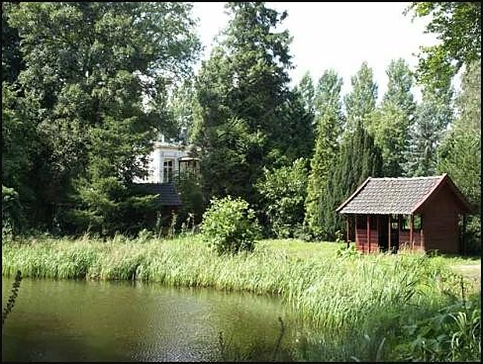
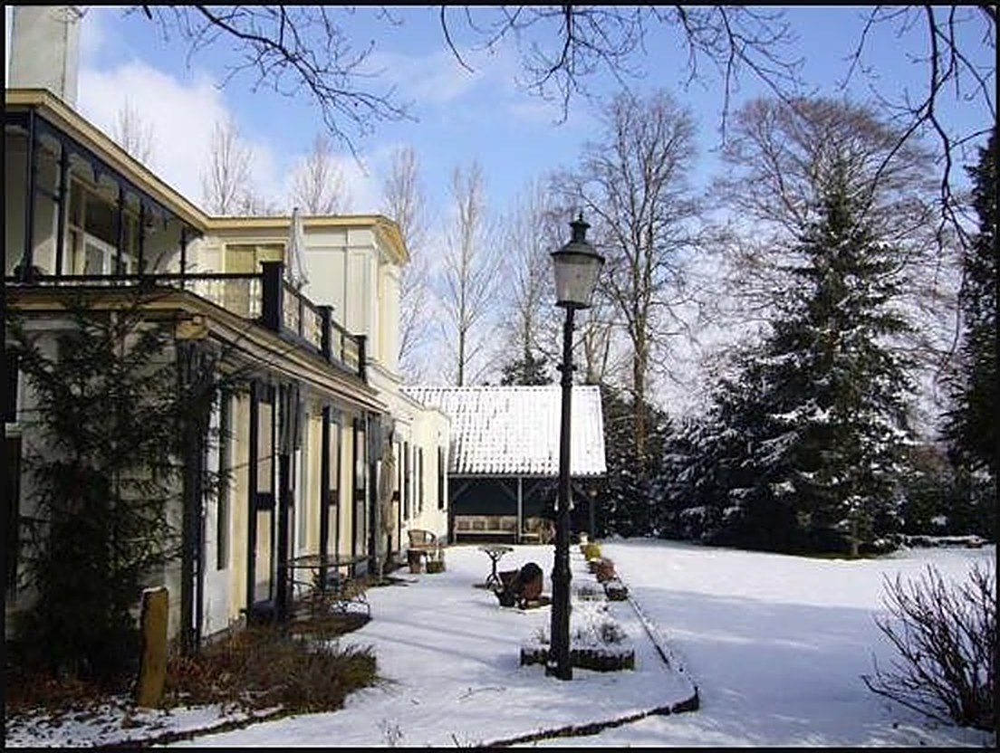
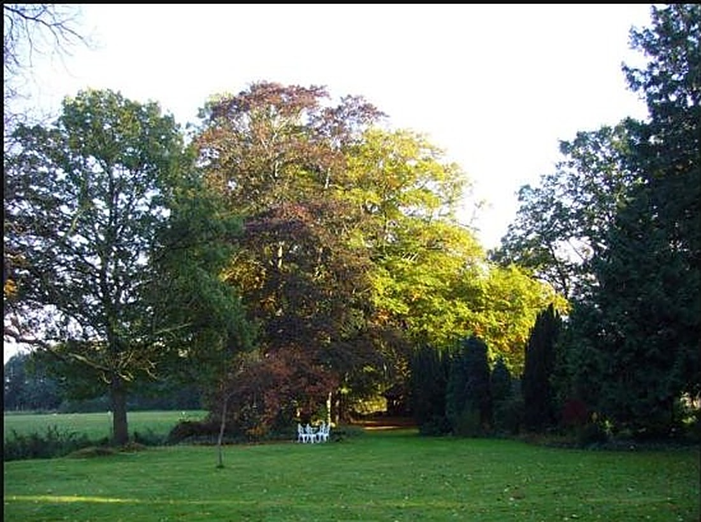
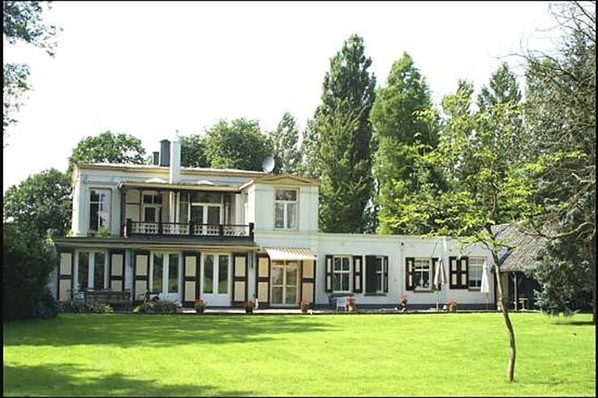

Uw eigen zijvleugel met tuindeuren naar de parktuin. Volledige privacy, geen andere gasten, en Deventer op 8 km.
Bekijk beschikbaarheid Rondleiding in foto'sDe vroegere praktijkruimte van Huize de Kaa is smaakvol ingericht als gastenverblijf. Vanuit de zit-slaapkamer loopt u via de openslaande deuren zo de tuin in, met de vijver, het Chinese huisje en de boomgaard.
Eigen vleugel, er zijn geen andere gasten aanwezig.
Twee goede fietsen en mooie routes langs de IJssel.
TV/DVD, muziek in elke kamer, koffie en thee inbegrepen.
Deventer, Zutphen en Zwolle op korte afstand.

2 personen, vanaf 2 nachten. Ontbijt optioneel (€ 7,50 p.p.).
2 personen, 7 nachten. Ideaal als uitvalsbasis voor de Veluwe.
Per week, met twee kamers. Fietsen € 5 per dag.



Huize de Kaa was jarenlang de huisartsenpraktijk van Terwolde. In de kamers vindt u boeken over de geschiedenis van het huis en de omgeving.
Kadijk 7, 7396 NJ Terwolde · 0571 291 582